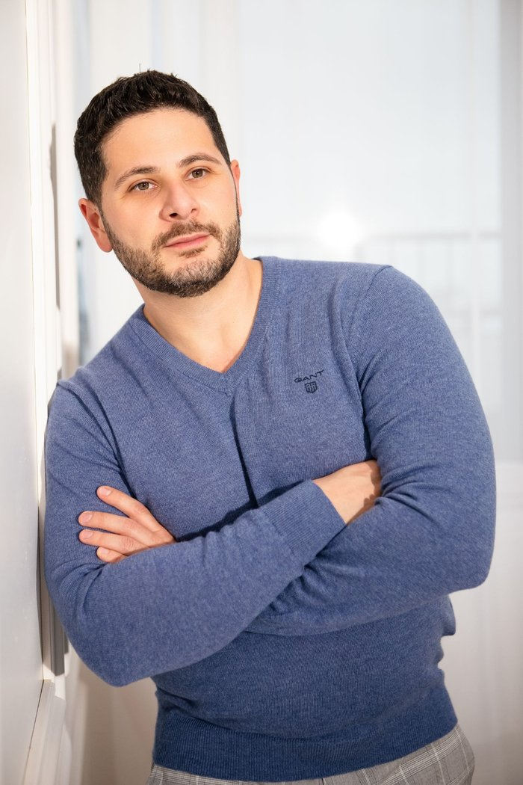

Обо мне
Рад, что вы хотите узнать обо мне больше.

Мой путь
Меня зовут Igor Liberchuk, с 2018 года я являюсь дипломированным психологическим психотерапевтом с общеевропейским правом на психотерапевтическую деятельность (Universität Bern). Обучение до степени магистра клинической психологии я прошёл в Рурском университете Бохума, профессиональную подготовку психологического психотерапевта — в академии DGVT в Дортмунде. Мои корни — на Украине, я вырос билингвом и поэтому провожу приём также на русском и украинском языках. У меня есть допуск к психотерапевтической деятельности со специализацией в поведенческой терапии и запись в реестре врачей Кассового врачебного объединения земли Северный Рейн (KV Nordrhein), что позволяет оплачивать психотерапию через государственное и частное медицинское страхование, а также органы социальной помощи. Высокие стандарты моих профессиональных методов я обеспечиваю регулярным повышением квалификации.
Квалификация
- 2018 — внесение в реестр врачей
- 2018 — допуск к психотерапевтической деятельности (Аппробация)
- 2015–2018 — Master of Advanced Studies in Psychotherapie, Бернский университет
- 2013–2018 — обучение психологического психотерапевта, академия DGVT, Дортмунд
- 2011–2013 — магистратура, Рурский университет Бохума: M. Sc. клиническая психология
- 2008–2011 — бакалавриат, Рурский университет Бохума: B. Sc. психология
Профессиональный опыт
- 2022 – настоящее время: онлайн-терапия, IVP Networks GmbH
- 2022–2023: онлайн-коуч, Nilohealth
- 2019–2023: собственная практика Psychotherapie Liberchuk в Дуйсбурге
- 2018–2020: психотерапевт в клинике психосоматики и психотерапии, Helios Duisburg
- 2015–2018: психологический психотерапевт (в процессе обучения) в амбулатории института в Дортмунде
- 2013–2017: клинический психолог в LVR-Klinikum Essen
Моя философия
Каждый человек несёт в себе способность находить новые пути — к большей удовлетворённости, внутренней стабильности и качеству жизни. Поэтому в моей практике в центре внимания стоят именно ваши потребности, отношения и цели: со мной вы — личность, а не шаблонный случай. В безопасной, доверительной атмосфере вы можете открыто говорить о мыслях, чувствах и переживаниях. Вместе, шаг за шагом, мы находим путь, который подходит именно вам и поддерживает вас в долгосрочной перспективе.
Что бы вас ко мне ни привело — стресс, тревога, депрессивные симптомы или другие личные и профессиональные нагрузки, — этот путь вам не нужно проходить в одиночку. Я профессионально, с уважением и научно обоснованными методами сопровождаю вас в поиске новых путей, которые действительно подходят вашей жизни. Если вы чувствуете, что настало время перемен, я тепло приглашаю вас сделать первый шаг вместе со мной.